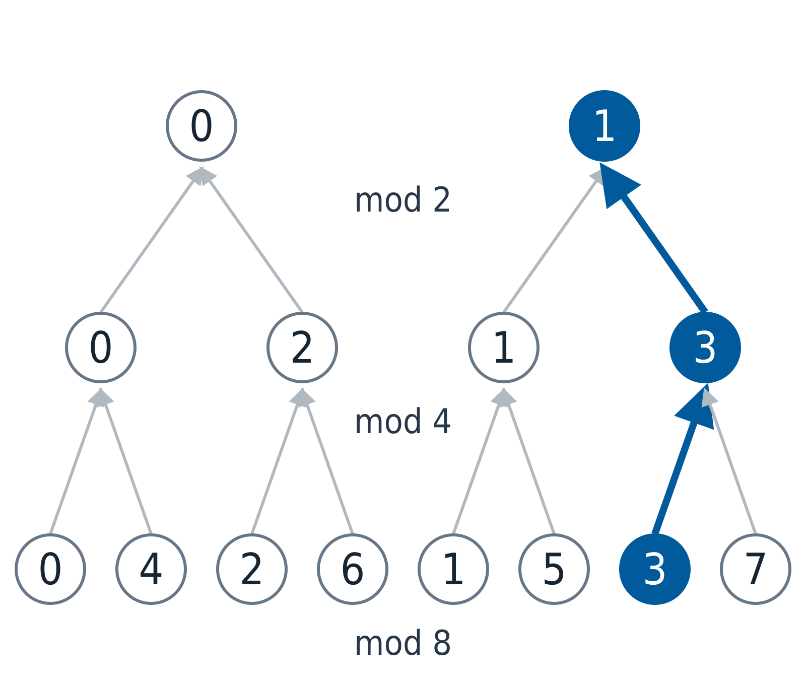

Profinite groups and infinite Galois theory
Written by OpenAI GPT-6.1 Sol in Codex, Ultra effort, October 2026. Self-checked by the writing AI; no independent review is claimed. Public domain (CC0).
An automorphism of an infinite algebraic extension is determined by its actions on finite subextensions. These actions cannot be chosen independently: restricting an action from a larger field must recover the action already chosen on a smaller one. This compatibility turns an infinite Galois group into a compact topological group. Class field theory will describe its abelian quotients by arithmetic data.
We use field operations, polynomial division, finite-dimensional linear algebra and the basic definitions of compact Hausdorff spaces and product topology. Section 0 proves the finite Galois correspondence and the Chinese remainder theorem used below. We also prove the required compactness and multiquadratic facts. The irreducibility and finite Galois groups of cyclotomic polynomials are proved in Cyclotomic fields, Theorem 12.1. Here we use that theorem to pass to infinite extensions. Freely accessible comparisons are Milne's Fields and Galois Theory and Kedlaya's Notes on class field theory.
Prerequisite proof availability. The named results below identify specific programme lessons. The prerequisite record shows which results are proved in published lessons and which full proofs are still missing. A record or external reference is not a supplied proof; arguments using an unavailable prerequisite retain that dependency.
0. The finite algebra behind the limits
We first establish the algebraic results needed to recover an infinite field from its finite pieces.
Finite automorphism lemma. If a finite group \(H\) of distinct automorphisms acts on a field \(E\), and \(F=E^H\), then \([E:F]=|H|\). Moreover \(E/F\) is separable and normal, and \(H\) is its full automorphism group.
Proof. Put \(n=|H|\). Given \(n+1\) elements \(x_1,\ldots,x_{n+1}\) of \(E\), form the matrix with entries \(h(x_j)\), indexed by \(h\in H\). Its homogeneous system has a nonzero solution over \(E\). Choose a solution \(c=(c_j)\) with least possible nonzero support and scale one nonzero coordinate to 1. Applying any \(h_0\in H\) to every equation permutes the rows, so \(h_0(c)\) is another solution. The difference \(h_0(c)-c\) has smaller support, because the normalized coordinate vanishes. Minimality forces this difference to be zero. Thus every \(c_j\) belongs to \(F\), and the identity row gives a nontrivial \(F\)-linear dependence among the \(x_j\). Consequently \(d=[E:F]\leq n\).
Distinct field homomorphisms are linearly independent over the target field. Indeed, a nontrivial relation with least number of terms cannot have one term. If \(h_1\) and \(h_r\) occur, select \(y\) with \(h_1(y)\ne h_r(y)\). Subtract \(h_r(y)\) times the relation evaluated at \(x\) from the relation evaluated at \(yx\). This removes the last term and leaves the first nonzero, contradicting minimality. Each member of \(H\) is \(F\)-linear, while \(\operatorname{Hom}_F(E,E)\) has dimension \(d\) over \(E\): evaluation on an \(F\)-basis identifies it with \(E^d\). Hence \(n\leq d\), proving equality.
For \(x\in E\), multiply \(X-z\) over the distinct members \(z\) of its \(H\)-orbit. The resulting polynomial is fixed coefficientwise by \(H\), hence belongs to \(F[X]\), and has distinct roots in \(E\). The minimal polynomial of \(x\) over \(F\) divides it. Thus that minimal polynomial is separable and splits in \(E\). This proves both separability and normality.
Finally a finite extension of degree \(d\) has at most \(d\) embeddings into an algebraic closure. To prove the bound, choose finitely many generators and adjoin them successively; at each step an embedding has at most the minimal-polynomial degree many extensions, since the new generator must go to one of its roots. Multiplying these bounds gives the extension degree by the tower law. Since the \(n=d\) members of \(H\) already attain the bound, there are no other automorphisms. \(\square\)
For a finite separable extension the same generator argument gives exactly the degree many embeddings: at each stage the transformed minimal polynomial has its full number of distinct roots in an algebraic closure, and sending the generator to any of them defines an extension of the embedding. If the extension is normal, all these embeddings preserve the field and are automorphisms. Preservation implies surjectivity because the image has the same finite dimension over the ground field.
Finite Galois correspondence. Let \(E/K\) be finite, separable and normal, with group \(G\). Subgroups \(H\subset G\) correspond bijectively and in reverse inclusion order to intermediate fields, by \[ H\longmapsto E^H,\qquad M\longmapsto\operatorname{Gal}(E/M). \] The degree is \([E^H:K]=[G:H]\). Normal subgroups correspond to normal extensions of \(K\), with quotient group \(G/H\).
Proof. The automorphism lemma gives \(\operatorname{Gal}(E/E^H)=H\) and \([E:E^H]=|H|\). For an intermediate field \(M\), the extension \(E/M\) is still separable and normal: the minimal polynomial over \(M\) of any element of \(E\) divides its split separable polynomial over \(K\). The embedding count gives \(|\operatorname{Gal}(E/M)|=[E:M]\). Its fixed field contains \(M\), and the automorphism lemma gives it the same relative degree as \(M\), so the fields are equal. The tower law proves the displayed degree formula.
A \(K\)-embedding of \(M\) into an algebraic closure extends to an embedding of \(E\) by the successive root construction. Normality of \(E/K\) makes the extension an element of \(G\). It follows that \(M/K\) is normal exactly when \(M\) is preserved by every element of \(G\). The equality \(g(E^H)=E^{gHg^{-1}}\), and the bijection just proved, make this equivalent to normality of \(H\). In that case restriction maps \(G\) onto \(\operatorname{Gal}(M/K)\), with kernel \(H\), proving the quotient assertion. \(\square\)
Primitive element lemma. A finite separable extension \(E/K\) is generated by one element. For infinite \(K\), write \(E=K(a_1,\ldots,a_r)\), and list its \(d=[E:K]\) embeddings into an algebraic closure, as counted above. For each pair of different embeddings, the linear polynomial \(\sum_j c_j(\sigma(a_j)-\tau(a_j))\) is nonzero. Their product is a nonzero polynomial in the \(c_j\). A nonzero polynomial over an extension of an infinite field cannot vanish on every tuple from that field: induction on the number of variables chooses values at which a nonzero coefficient stays nonzero, and then avoids finitely many roots in the last variable. Choose \(c_j\in K\) making this product nonzero. The element \(a=\sum_j c_ja_j\) then has \(d\) distinct images. Its minimal polynomial has degree at least \(d\), and at most \([E:K]=d\); thus \(K(a)=E\).
For finite \(K\), the field \(E\) is finite. Its multiplicative group is cyclic. To prove this, let \(m\) be its exponent. For each prime power dividing \(m\), choose an element attaining that prime-power order by taking a suitable power of an element whose order contains it. The product of these elements has order \(m\), because they commute and their orders are pairwise coprime. Every nonzero element is a root of \(X^m-1\), so the polynomial root bound gives \(|E^\times|\leq m\). Since \(m\) divides the group order, equality follows. A generator of \(E^\times\) consequently generates \(E\) as a field. This proves the lemma in both cases.
Chinese remainder lemma. For pairwise coprime positive integers \(n_1,\ldots,n_r\), reduction gives \[ \mathbf Z/(n_1\cdots n_r)\mathbf Z \simeq\prod_{j=1}^r\mathbf Z/n_j\mathbf Z. \] Put \(N=n_1\cdots n_r\). For each \(j\), Bezout's identity supplies integers \(b_j,c_j\) with \(b_j(N/n_j)+c_jn_j=1\). Then \(e_j=b_jN/n_j\) has residue 1 at \(n_j\) and 0 at the other moduli. Thus \(\sum_j a_je_j\) lifts any desired tuple of residues. An integer in the kernel is divisible by every \(n_j\), hence by their product, proving injectivity. The divisibility assertion follows successively from Bezout: if \(a,b\) are coprime and both divide \(x\), then \(b\) divides \(x/a\). Bezout itself follows by choosing the least positive integer in the ideal \((a,b)\) and applying integer division to show that it divides both generators. This also proves the construction without assuming the remainder lemma in advance.
The same construction proves the polynomial remainder lemma used later for completions: if \(f_1,\ldots,f_r\in k[X]\) are pairwise coprime, then \[ k[X]/(f_1\cdots f_r)\simeq\prod_j k[X]/(f_j). \] Polynomial division shows that an ideal generated by two polynomials is generated by a polynomial of least nonzero degree: division by that polynomial leaves a smaller-degree member of the ideal, hence zero. Coprimality therefore gives a polynomial Bezout identity. Apply it to \(f_j\) and the product of the other factors to construct the same idempotent lifts as above. An element in the kernel is divisible by each factor, and successive Bezout identities make it divisible by the product. This proves surjectivity and injectivity over every field \(k\).
1. What compatibility means
For every positive integer \(n\), put
\[ \widehat{\mathbf Z}=\varprojlim_n\mathbf Z/n\mathbf Z. \]The indexing order is divisibility. An element is a family \((a_n)_n\), with \(a_n\in\mathbf Z/n\mathbf Z\), satisfying \(a_m\bmod n=a_n\) whenever \(n\mid m\). Addition and multiplication are coordinatewise. Give each finite ring its discrete topology and the limit the subspace topology of their product.
The map \(\mathbf Z\to\widehat{\mathbf Z}\) is injective: an integer divisible by every positive integer is zero. Its image is dense. Indeed, finitely many compatible congruence conditions are all satisfied by an integer representing the coordinate at the least common multiple of their moduli.
Over \(\mathbf F_q\), restriction from \(\mathbf F_{q^m}\) to \(\mathbf F_{q^n}\), for \(n\mid m\), takes the exponent of the Frobenius automorphism modulo \(m\) to that exponent modulo \(n\). Thus compatible Frobenius exponents give exactly this inverse limit. Notice that the algebraic cyclic subgroup generated by Frobenius contains only integral exponents. Taking its closure adds all compatible profinite exponents.
The same construction works for an inverse system of finite groups \(G_i\) with homomorphisms \(G_j\to G_i\). Its inverse limit consists of the compatible tuples in \(\prod_iG_i\). A profinite group is a topological group isomorphic to such an inverse limit.

Figure 1. Finite approximations to \(\mathbf Z_2\). Each edge is reduction of a residue. The highlighted branch is the image of the integer 3. Continuing the tree indefinitely gives \(\mathbf Z_2\); this finite drawing is a schematic of the compatibility condition.
2. Finite quotients recognize compact groups
Proposition 1.1. Characterization of profinite groups
A topological group is profinite if and only if it is compact, Hausdorff and totally disconnected. In a profinite group, open normal subgroups form a neighborhood basis at the identity. Every open subgroup is closed and has finite index. Conversely, every closed subgroup of finite index is open.
Proof. First, a product of finite discrete nonempty spaces is compact. To see this directly, take a family of closed subsets with the finite intersection property. The filter it generates extends to a maximal proper filter, or ultrafilter, by Zorn's lemma. In a finite partition, exactly one part belongs to an ultrafilter: two disjoint parts cannot both belong, and if no part belonged then all their complements would belong, giving an empty intersection. Apply this to each coordinate partition and choose its selected coordinate value. The tuple so obtained has every basic neighborhood in the ultrafilter. It belongs to each original closed set, because otherwise its open complement would contain such a neighborhood and contradict membership of that closed set in the filter. Thus every closed family with the finite intersection property has nonempty intersection, the equivalent closed-set formulation of compactness. A product containing an empty factor is empty and compact as well. Products of Hausdorff spaces are Hausdorff, since a differing coordinate separates two points.
An inverse limit of finite discrete groups is a closed subset of their product: each compatibility condition is an equality of two continuous maps to a finite Hausdorff space. It is consequently compact and Hausdorff. Any two distinct tuples differ at a coordinate, and that coordinate separates them by a clopen set. A connected subset can therefore have only one point. Finite intersections of coordinate kernels form a basis of open normal subgroups.
For the converse, we first justify the clopen neighborhoods that total disconnectedness supplies. In a compact Hausdorff space \(X\), let \(Q_x\) be the intersection of all clopen sets containing \(x\). This intersection is connected. Otherwise write it as two disjoint nonempty compact sets, with \(x\) in the first, and choose disjoint open neighborhoods \(U,V\) of those sets. Each point outside \(U\cup V\) is excluded by a clopen neighborhood of \(x\). Compactness gives finitely many such neighborhoods whose intersection \(C\) lies in \(U\cup V\). Both \(C\cap U\) and \(C\cap V\) are clopen in \(X\). The first contains \(x\) and excludes the second part of \(Q_x\), contradicting the definition of \(Q_x\). In a totally disconnected space it follows that \(Q_x=\{x\}\). Applying compactness once more to the complement of any neighborhood of \(x\) produces a clopen neighborhood inside it.
Now let \(G\) be compact, Hausdorff and totally disconnected, and choose a clopen neighborhood \(C\) of 1 inside a prescribed neighborhood. Compactness of \(C\) and continuity of multiplication give an identity neighborhood \(V\) such that \(VC\subset C\). Replace \(V\) by a symmetric smaller neighborhood. For \(g\in V\), both \(gC\subset C\) and \(g^{-1}C\subset C\), so \(gC=C\). The stabilizer
\[ H=\{g\in G:gC=C\} \]is a subgroup containing \(V\), hence open; also \(H\subset C\), since \(1\in C\). Its cosets form an open cover of the compact space \(G\), so there are finitely many. The core \(N=\bigcap_{g\in G}gHg^{-1}\) is an intersection of finitely many conjugates, and is an open normal subgroup inside \(C\).
The natural map
\[ G\longrightarrow\varprojlim_{N\text{ open normal}}G/N \]is injective because these \(N\) form a basis and \(G\) is Hausdorff. It is surjective: the cosets prescribed by a compatible tuple have the finite intersection property, and compactness supplies a point in their intersection. A continuous bijection from a compact space to a Hausdorff space is a homeomorphism.
Finally, an open subgroup has open cosets; its complement is a union of them, so it is closed. Compactness makes its index finite. If a subgroup is closed and has finite index, its complement is a finite union of closed cosets, so it is open. \(\square\)
The word closed in the last assertion matters. We will construct a subgroup of index 2 which is dense and proper.
3. The correspondence for an infinite extension
Let \(L/K\) be algebraic, normal and separable. Every finite collection of elements of \(L\) lies in a finite Galois extension \(E/K\) contained in \(L\): take the splitting fields of their minimal polynomials and their compositum. Give \(G=\operatorname{Gal}(L/K)\) the Krull topology, with the groups \(\operatorname{Gal}(L/E)\), for such \(E\), as an identity neighborhood basis.
Restriction induces a topological isomorphism
\[ G\simeq\varprojlim_{E/K\text{ finite Galois in }L}\operatorname{Gal}(E/K). \]It is injective because the fields \(E\) exhaust \(L\). Conversely, a compatible family defines an automorphism on their union; its inverse is the family of inverse automorphisms. This also proves that the topology just defined is the inverse-limit topology. In particular, \(G\) is profinite.
Here is the embedding extension argument in the infinite case. In an algebraic closure \(\Omega\) of \(K\), partially order embeddings of subfields containing an intermediate field \(M\), extending a specified \(K\)-embedding of \(M\), by extension of both domain and map. The union along a chain is an embedding of its union field. Zorn's lemma supplies a maximal embedding. If its domain omits \(x\in\Omega\), transform the minimal polynomial of \(x\) by that embedding and choose a root in \(\Omega\). Polynomial division identifies the adjoining field with the quotient by the minimal polynomial, so this choice extends the embedding to include \(x\), a contradiction. Its domain is therefore all of \(\Omega\).
The image is algebraically closed: pull a polynomial's coefficients back to \(\Omega\), split it there, and apply the embedding to its roots. It contains \(K\), and every element of \(\Omega\) is algebraic over \(K\). Its polynomial over \(K\) already splits in this image, so that element belongs to the image. Hence the extended embedding is an automorphism of \(\Omega\). Normality makes it and its inverse preserve \(L\), so restriction gives an automorphism of \(L\). In particular, \(G\to\operatorname{Gal}(E/K)\) is surjective for every finite Galois \(E/K\) inside \(L\).
Theorem 1.2. Infinite Galois correspondence
The assignments
\[ H\longmapsto L^H, \qquad M\longmapsto\operatorname{Gal}(L/M) \]are inverse, inclusion-reversing bijections between closed subgroups of \(G\) and fields \(K\subset M\subset L\). An open subgroup corresponds to a finite extension of \(K\), with \([M:K]=[G:H]\). A closed normal subgroup corresponds to a Galois extension of \(K\), and
\[ \operatorname{Gal}(M/K)\simeq G/H \]as topological groups. For any subgroup \(H\), closed or otherwise,
\[ \operatorname{Gal}(L/L^H)=\overline H. \]Proof. The group fixing \(M\) is closed: it is the intersection of the stabilizers of its elements, and each stabilizer is open and closed. If \(x\in L\setminus M\), the separable minimal polynomial of \(x\) over \(M\) has another root in \(L\), since \(L/M\) is normal. The embedding sending \(x\) to that root extends to an automorphism of \(L/M\). Thus the fixed field of \(\operatorname{Gal}(L/M)\) is exactly \(M\).
The action on each element of \(L\) is locally constant, so \(H\) and \(\overline H\) have the same fixed field. If \(\sigma\notin\overline H\), choose finite Galois \(E/K\) such that the coset \(\sigma\operatorname{Gal}(L/E)\) misses \(H\). The restriction \(\sigma|_E\) is outside the image \(H_E\) of \(H\) in \(\operatorname{Gal}(E/K)\). Finite Galois theory supplies an element of \(E^{H_E}\) moved by \(\sigma\). That element lies in \(L^H\). This proves the last displayed equality and the bijection for closed subgroups.
If \(H\) is open, it contains \(\operatorname{Gal}(L/E)\) for some finite Galois \(E/K\). Hence \(L^H\subset E\), and finite Galois theory computes its degree as \([G:H]\). Conversely, if \(M/K\) is finite, finitely many generators have an open common stabilizer, namely \(\operatorname{Gal}(L/M)\).
Conjugation gives \(L^{\sigma H\sigma^{-1}}=\sigma(L^H)\). Thus \(H\) is normal exactly when \(M=L^H\) is stable under all \(K\)-automorphisms of \(L\). By the extension fact, stability is equivalent to normality of \(M/K\); separability is inherited. Restriction to \(M\) is then a continuous surjection with kernel \(H\). Its quotient isomorphism is a homeomorphism by compactness. \(\square\)
For two intermediate fields, taking their compositum corresponds to intersecting their closed subgroups. Taking their intersection corresponds to the closure of the subgroup generated by the two subgroups. These follow directly from the inclusion-reversing bijection.
4. Frobenius and cyclotomic characters
Inside an algebraic closure of \(\mathbf F_q\), the roots of \(X^{q^n}-X\) form a field: raising to \(q^n\) preserves sums and products in characteristic \(p\), and also preserves inverses of nonzero roots. The derivative is \(-1\), so there are exactly \(q^n\) roots. This gives a field of degree \(n\) over \(\mathbf F_q\). Conversely, a degree-\(n\) extension has \(q^n\) elements and every nonzero element satisfies \(x^{q^n-1}=1\) by the finite-group order theorem. It is therefore exactly this root field. Its Frobenius has order \(n\): its \(n\)-th power is the identity, while a smaller positive power \(d<n\) cannot fix all \(q^n\) elements, since \(X^{q^d}-X\) has at most \(q^d\) roots. The splitting-field extension is separable and Galois of degree \(n\), so these \(n\) powers account for its entire Galois group. This also shows that \(\mathbf F_{q^n}\subset\mathbf F_{q^m}\) exactly when \(n\mid m\), using the tower law for necessity and iterated Frobenius for sufficiency.
Proposition 1.3. Two explicit infinite Galois groups
Arithmetic Frobenius \(x\mapsto x^q\) corresponds to 1 under
\[ \operatorname{Gal}(\overline{\mathbf F}_q/\mathbf F_q)\simeq\widehat{\mathbf Z}. \]The cyclotomic character gives topological isomorphisms
\[ \begin{aligned} \operatorname{Gal}(\mathbf Q(\mu_\infty)/\mathbf Q)&\simeq\widehat{\mathbf Z}^{\times},\\ \operatorname{Gal}(\mathbf Q(\mu_{p^\infty})/\mathbf Q)&\simeq\mathbf Z_p^{\times}. \end{aligned} \]The first character is characterized by \(\sigma(\zeta)=\zeta^{\chi(\sigma)}\) for every root of unity \(\zeta\).
Proof. Every finite extension of \(\mathbf F_q\) is \(\mathbf F_{q^n}\), with cyclic Galois group of order \(n\) generated by arithmetic Frobenius. Restriction reduces the exponent, giving the first assertion and the density of the integral powers of Frobenius.
For each \(n\), cyclotomic irreducibility identifies \(\operatorname{Gal}(\mathbf Q(\mu_n)/\mathbf Q)\) with \((\mathbf Z/n\mathbf Z)^\times\). Restrictions are reductions of the exponent. An element of \(\widehat{\mathbf Z}\) is a unit exactly when every coordinate is a unit: the coordinatewise inverses are then compatible. Infinite Galois theory therefore gives the second assertion. Restricting to \(n=p^r\) gives the third. \(\square\)
The Chinese remainder theorem also gives
\[ \widehat{\mathbf Z}\simeq\prod_p\mathbf Z_p, \qquad \widehat{\mathbf Z}^{\times}\simeq\prod_p\mathbf Z_p^{\times}. \]The cyclotomic character is an action on roots of unity. It is not a reciprocity map. Later, with arithmetic Frobenius as our reciprocity convention, a finite unit idèle \(u\) over \(\mathbf Q\) will act on roots of unity by the exponent \(u^{-1}\). Keeping this distinction avoids a sign error in explicit reciprocity.
5. A procyclic tower inside the cyclotomic field
We need some elementary structure of local units. For odd \(p\), simple-root lifting of \(X^{p-1}-1\) gives a subgroup \(\mu_{p-1}\subset\mathbf Z_p^\times\) mapping isomorphically onto \(\mathbf F_p^\times\). At each lifting step, the derivative is a unit, so a unique correction modulo the next power of \(p\) exists. Consequently
\[ \mathbf Z_p^\times=\mu_{p-1}\times(1+p\mathbf Z_p). \]The second factor is topologically isomorphic to the additive group \(\mathbf Z_p\). Indeed, the binomial theorem gives
\[ v_p((1+p)^{p^r}-1)=r+1. \]For the inductive step, if \(v_p(t)\geq1\), then \(pt\) is the unique lowest-valuation term of \((1+t)^p-1\). Hence the powers of \(1+p\) generate every quotient \((1+p\mathbf Z_p)/(1+p^{r+1}\mathbf Z_p)\), of order \(p^r\). The compatible exponent maps yield the desired isomorphism.
For \(p=2\), reduction modulo 4 gives
\[ \mathbf Z_2^\times=\{\pm1\}\times(1+4\mathbf Z_2). \]Here \(v_2(5^{2^r}-1)=r+2\): squaring \(1+t\), with \(v_2(t)\geq2\), increases \(v_2(t)\) by one. Thus 5 generates the finite quotients of \(1+4\mathbf Z_2\), and this factor is again isomorphic to \(\mathbf Z_2\).
Proposition 1.4. The cyclotomic procyclic extension
Let \(T\) be the closure of the finite-order elements of \(\widehat{\mathbf Z}^\times\), and let \(\widetilde{\mathbf Q}\) be its fixed field in \(\mathbf Q(\mu_\infty)\). Then
\[ \operatorname{Gal}(\widetilde{\mathbf Q}/\mathbf Q)\simeq\widehat{\mathbf Z}. \]For every number field \(K\), the compositum \(K\widetilde{\mathbf Q}\) is Galois over \(K\) with Galois group topologically isomorphic to \(\widehat{\mathbf Z}\).
Proof. The unit decompositions above give
\[ \widehat{\mathbf Z}^\times\simeq \left(\{\pm1\}\times\prod_{p\text{ odd}}\mu_{p-1}\right) \times\prod_p\mathbf Z_p. \]Write the first parenthesis as \(T_0\). The additive factors \(\mathbf Z_p\) have no nonzero torsion, so every finite-order element lies in \(T_0\). The finite-support elements of \(T_0\) all have finite order and are dense in \(T_0\). Hence \(T=T_0\). The quotient is \(\prod_p\mathbf Z_p\simeq\widehat{\mathbf Z}\), and Theorem 1.2 proves the first assertion. Elements of \(T_0\) with infinitely many nontrivial coordinates can have infinite order; this is why the closure is essential.
Set \(E=K\cap\widetilde{\mathbf Q}\). This is finite over \(\mathbf Q\). Restriction identifies \(\operatorname{Gal}(K\widetilde{\mathbf Q}/K)\) with \(\operatorname{Gal}(\widetilde{\mathbf Q}/E)\). To justify surjectivity even when \(K/\mathbf Q\) is not Galois, the image is compact and hence closed, and its fixed field in \(\widetilde{\mathbf Q}\) is \(E\); Theorem 1.2 therefore identifies the image with that whole group.
A subgroup of index \(f\) in \(\widehat{\mathbf Z}\) which is open is \(f\widehat{\mathbf Z}\). In fact it contains some \(m\widehat{\mathbf Z}\), and its image in the cyclic group \(\mathbf Z/m\mathbf Z\) is the unique subgroup of the indicated index. Multiplication by \(f\) is an injective continuous map from \(\widehat{\mathbf Z}\) onto \(f\widehat{\mathbf Z}\), and is a homeomorphism by compactness. Apply this with \(f=[E:\mathbf Q]\). \(\square\)
The extension \(\widetilde{\mathbf Q}\) is specified canonically as a fixed field. An isomorphism of its Galois group with \(\widehat{\mathbf Z}\) requires choices of generators of the local principal-unit factors. In particular, there is no distinguished global Frobenius generator here.
6. Abelianization and a warning about finite index
For a profinite group \(G\), define
\[ G^{\mathrm{ab}}=G/\overline{[G,G]}. \]The closure is a closed normal subgroup, and the quotient is profinite and abelian. Every continuous homomorphism from \(G\) to a Hausdorff abelian group annihilates the commutators and their closure, so it factors through this quotient.
For the absolute Galois group \(G_K\), its fixed field is \(K^{\mathrm{ab}}\), the compositum of the finite abelian extensions in a chosen separable closure. Indeed, each such extension corresponds to an open normal subgroup containing the commutators. Conversely, the profinite abelian quotient is the inverse limit of its finite abelian quotients, whose fixed fields exhaust this compositum. A finite compositum of abelian extensions is abelian because its Galois group injects into the product of their abelian Galois groups.
We first justify the finite multiquadratic calculation needed for a counterexample. For distinct primes \(p_1,\ldots,p_m\), put \(E_m=\mathbf Q(\sqrt{p_1},\ldots,\sqrt{p_m})\). We claim that \([E_m:\mathbf Q]=2^m\), with a basis consisting of the products \(\prod_{i\in I}\sqrt{p_i}\), and that every choice of signs is a Galois automorphism. Induct on \(m\), starting with \(E_0=\mathbf Q\). By the induction hypothesis, the basis products in \(E_m\) have distinct characters under its sign-change group. If \(x\in E_m\) has \(x^2\in\mathbf Q^\times\), then every automorphism sends \(x\) to \(x\) or \(-x\). Expanding in that basis shows that \(x\) lies in one character space, hence is a rational multiple of one basis product. In particular, \(\sqrt{p_{m+1}}\) cannot belong to \(E_m\): squaring such an expression would contradict its odd valuation at the new prime. Adjoining it therefore doubles the degree and gives the asserted basis. The new extension is a splitting field of the polynomials \(X^2-p_i\), so is Galois. Its group injects into the sign choices, and both sets have \(2^{m+1}\) elements, so all sign choices occur. This completes the induction.
Now consider
\[ L=\mathbf Q(\sqrt p:p\text{ prime}), \qquad \operatorname{Gal}(L/\mathbf Q)\simeq\prod_p\mathbf F_2. \]The calculation just proved permits independent sign changes at each finite stage; its restriction maps simply forget signs. Passage to the inverse limit gives the displayed group.
Let \(V=\prod_p\mathbf F_2\), and let \(D=\bigoplus_p\mathbf F_2\) be the finite-support subgroup. It is dense and proper. The quotient \(V/D\) is a nonzero vector space. Choose a basis containing the class of the all-ones vector, and define a linear functional to \(\mathbf F_2\) taking that basis vector to 1 and the others to 0. The inverse image \(H\subset V\) of its kernel has index 2 and contains \(D\). Therefore \(H\) is dense and proper, and cannot be open, since an open subgroup is closed. Its fixed field is nevertheless \(\mathbf Q\), because \(\overline H=V\).
This construction uses the axiom of choice for the vector-space basis. It exhibits exactly what topology repairs in the infinite correspondence: the subgroup fixing a field is closed, while an abstract finite-index subgroup need not be.
Exercises
- Easy. Construct explicitly the isomorphism \(\widehat{\mathbf Z}\simeq\prod_p\mathbf Z_p\), including its inverse and its topology.
- Medium. Show that the closure of the subgroup generated by arithmetic Frobenius in \(\operatorname{Gal}(\overline{\mathbf F}_q/\mathbf F_q)\) is the whole group, but that the subgroup itself is proper.
- Medium. Construct a non-open subgroup of index 2 in \(\operatorname{Gal}(\mathbf Q(\sqrt p:p\text{ prime})/\mathbf Q)\). Determine its fixed field.
- Hard. Starting with the structure of \(\mathbf Z_p^\times\) proved above, identify the closure of the torsion in \(\widehat{\mathbf Z}^\times\) and prove that base change of its fixed field to any number field again has Galois group \(\widehat{\mathbf Z}\).
Solutions
- Restriction of the coordinates at \(p^r\) gives a point of \(\mathbf Z_p\) for each \(p\). Conversely, given these points and \(n=\prod_p p^{r_p}\), the Chinese remainder theorem defines a unique residue modulo \(n\) having their prescribed residues modulo each \(p^{r_p}\). These residues are compatible under reduction, and the two constructions are inverse ring homomorphisms. Each finite coordinate of either map depends on finitely many finite coordinates of the other. Both maps are therefore continuous.
- At the finite stage \(\mathbf F_{q^n}\), Frobenius has order \(n\) and generates the full finite Galois group. Any basic neighborhood prescribes an action on finitely many such fields, hence on their compositum \(\mathbf F_{q^m}\), with \(m\) the least common multiple of their degrees. Some integral power of Frobenius has that action. This proves density. To prove properness, use \(\widehat{\mathbf Z}=\prod_p\mathbf Z_p\) and take a tuple with coordinate 0 at 2 and 1 at 3. An integer giving coordinate 0 in \(\mathbf Z_2\) would have to be zero, which cannot have coordinate 1 in \(\mathbf Z_3\).
- Independent prime square classes give the product \(V=\prod_p\mathbf F_2\). Let \(D\) be its finite-support subgroup and choose a nonzero linear functional on \(V/D\). Its inverse-image kernel \(H\) has index 2. It contains the dense subgroup \(D\), so is dense; it is proper because the functional is nonzero. An open subgroup is closed, hence \(H\) is not open. Theorem 1.2 gives \(\operatorname{Gal}(L/L^H)=\overline H=V\), so \(L^H=\mathbf Q\).
- Put \(T_0=\{\pm1\}\times\prod_{p\text{ odd}}\mu_{p-1}\). The principal-unit factors are copies of the torsion-free additive groups \(\mathbf Z_p\). All finite-order elements consequently lie in \(T_0\), while the finite-support elements of \(T_0\) are finite-order and dense. Thus the torsion closure is \(T_0\), and the quotient is \(\prod_p\mathbf Z_p\). For \(E=K\cap\widetilde{\mathbf Q}\), restriction gives \(\operatorname{Gal}(K\widetilde{\mathbf Q}/K)=\operatorname{Gal}(\widetilde{\mathbf Q}/E)\), as justified in Proposition 1.4. This is an open subgroup of \(\widehat{\mathbf Z}\) of index \(f=[E:\mathbf Q]\), hence \(f\widehat{\mathbf Z}\). Multiplication by \(f\) is a topological isomorphism from \(\widehat{\mathbf Z}\) onto it. This proves the assertion for every number field, without assuming that \(K/\mathbf Q\) is Galois.
Editable edition
The reading edition provides the complete LaTeX source of this lesson, the cumulative course LaTeX and the editable source ZIP. The archive contains all twenty-four Markdown lessons, complete LaTeX bodies, original diagrams, metadata and reproduction instructions.
References
The finite automorphism lemma, finite Galois correspondence, primitive element theorem and integer and polynomial remainder lemmas are proved in section 0. Sections 1–3 prove compactness, embedding extension and the infinite correspondence; sections 4–5 treat Frobenius and the procyclic examples.
- J. S. Milne, Fields and Galois Theory, version 5.10.
- Kiran S. Kedlaya, Notes on class field theory, author-hosted HTML edition.
The proof guide gives the lesson sequence and the exact prerequisite record. External references accompany the written arguments.